Super-agent 设计探索：让人只做决策和验收
DeepSeek Harness 团队这篇长文的判断是：做单件事的 Agent 已经足够强，现在卡住的是人一次只盯得住 3 到 5 个会话。文章提出 Super-agent：常驻的 Router 只管分派和对外说话，隔离的 Worker 并发干活；输入从人打字改成群聊、PR、CI 等事件；再加异步工具、存算分离和外部 Watchdog，把会话变成系统内部细节。文首自称是架构思路探讨，不是在介绍现有产品功能，配套仓库也写明是研究原型。本页按原文 9 节走一遍，后面附 @shao__meng 的 X 摘要、评论区、对我们工作台的借鉴（指挥家分析）和来源核对。
公众号原文 X 摘要 @shao__meng 仓库 dsh-superagent-prototype 英文 Article @DeepTibowow 官方英文机翻版 @DeepSeekHarness 精读版（加密，全文对照） 动图版精读（加密） 本页导读约 25 分钟
文章开头先声明：这篇讲的是面向工程落地的架构思路，不是在介绍 DeepSeek Harness 现有的产品功能。
背景有两条。一是 Coding Agent 这类单任务 Agent 越来越不需要人一步步看着，人往上退到拍板和验收。二是个人助手（Personal Agent）大批出现，直接接入每天的日程、邮件、消息与工作平台，持续在线、按事件行动；作者认为这种持续在线、由事件驱动的方式，并不局限于个人场景，在软件开发这类商业场景里同样有用。
可现在的主流做法还是一个会话管一件事，会话之间互不相通。要同时推几件事，人得自己来回切、自己记住每边说到哪；作者的观察是，一般人同时跟得住的活跃 Session 也就 3 到 5 个。所以单件事能做多好看模型，同时能做几件事看人的注意力。仅在本地单会话 Agent 上加挂 CLI、MCP 或连接器也不够：单会话里一调用就同步阻塞，几件事的上下文混乱成一团，本地设备一离线即停止。
他们的方向：不再让 Agent 依附于某一次手动打开的会话，而是变成一个能跨会话记住上下文、同时推好几件复杂事又互不打架的连续实体，取名 Super-agent。在内部实例里，一个开发任务可以前半段在 IM 里谈、后半段在 GitHub 上接着做；它还盯着公共群，没人 @ 它时也会自己找到根因并提交修复 Pull Request。


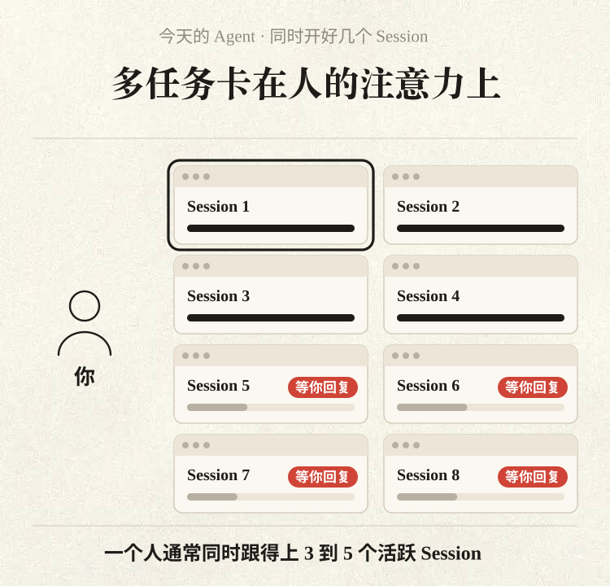

四个基础特征（作者认为 Super-agent 应当具备）：连续——在 IM 聊天、GitHub 评论里交互都像同一个 Agent，比如先在 IM 提方案 A、后在 PR 评论改成 B，它能跟上；高效——并行、高质量地做多件事，不必等上一条完成；主动——持续观察环境事件，值得做才出手，不需要时保持安静；持久——始终在线，直接接入真实的工作环境，异常能自动恢复。
一个 ReAct Loop 撑不起这四点，需要一套架构。作者认为相似约束会导出相似架构：不管是个人助手还是软件开发里的 Agent，只要想做的是持续在线、能同时响应各种环境事件的系统，底层可能会走到相近的结构；且很多问题和传统计算机系统长期讨论的问题很像。落地时会有不同变体，但作者认为下面五个模块构成基本框架：双层架构（第 2 节）、事件驱动（第 3 节）、面向人的交互（第 4 节）、计算/状态/环境分离（第 5 节）、以及第 6 节的 Watchdog。

连续性和吞吐的权衡拆到两层；Session 成了实现细节
既要跨渠道连贯，又要多件事并行，底层会话怎么组织就绕不开一个取舍：连续性还是吞吐量。所有消息都交给一个 Session，上下文最连贯，但一个 ReAct 循环只能一步步走，任务完成耗时长、吞吐低，几件事的中间细节混在一起还会拖累效果。每条消息都另起一个 Session，吞吐最高，可任务之间一旦有关联，没有全局上下文，各会话的结果就各说各话，几个会话分别回复用户也让交流一团乱。
他们的解法是把「保持全局连贯」和「大量并发干活」放到两层：上面一层常驻的 Router（2.1 节）负责和人打交道、做全局协调；下面一层 Worker（2.2 节）彼此上下文隔开，各干各的具体任务。
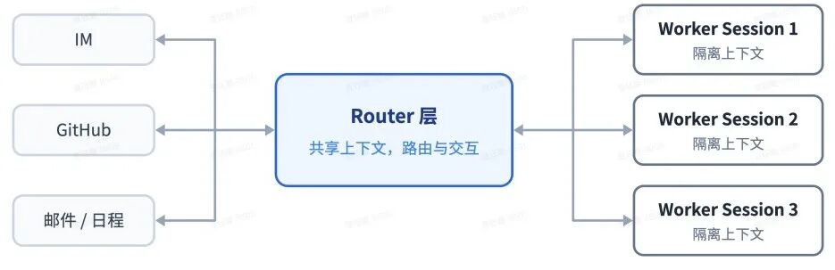


这样系统接管了上下文管理和并发，用户打交道的一直是同一个 Super-agent。作者认为让用户手动管 Session 多半是从 LLM API 继承来的惯性，Session 应该是实现细节，不是认知负担。拆开以后，「给用户看什么样的项目管理界面」成了独立的产品问题（第 8.2 节再谈）。两层是逻辑分工，每层内部都可以有自己的结构。
Router 层：一直在线，接住所有入口进来的人类消息，跨任务的信息和决定都汇到它这里，由它充当全局「序点」（Sequence Point）、协调点和记忆。为了不让它变成瓶颈，它自己不干具体的活，只负责跟人打交道和派活，连 Bash 工具都可以不给。
它和常见 Agent Team 不同：Team 是在一个复杂任务内部拆步骤，Team Lead 得吃透细节、规划子任务，还要频繁协调各个成员，推理负担很重；Router 只管多个任务之间怎么关联、怎么分派。反过来，如果用提示词约束 Team 主会话不亲自干活、只对外交互并分派独立任务，也算这种双层架构。作者的经验是 Router 的活没想象中复杂，较轻量的模型往往就够。
实现上他们选了最省事的一种：Router 就是一个一直开着的 LLM 会话。它没那么容易堵，因为上一轮推理时进来的环境事件（第 3 节说的 Trigger）会先积压着，到下一轮一起处理：消息稀疏时一条条进，回得快；消息扎堆、开始排队时，攒下的几条在下一次调用里一起塞进去。Router 每一步都是读得多、写得少，多条一起送进去，预填充（Prefill）阶段可以并行算，单次耗时涨得比批量慢得多，于是在一定范围内，排队越多，每个决定平均花的推理时间反而越少；能攒多少，受上下文长度和模型一轮能准确处理几条的限制。
第 7.2 节给了实测。再配上订阅直通和链式召回（见 3.2、3.3 节），一个常驻 Router 在他们眼下的团队规模里够用。等规模进一步扩大、一个会话确实扛不住时，可以在 Router 内部加几层过滤，或者切成几个会话（Sharding）；但切得越碎，并发越高，各片之间的记忆和上下文越接不上。全局记忆没解决之前，这道取舍题一直存在。
Worker 层：彼此上下文隔离，挂完整执行工具，专注单一任务；因为直接决定结果和代码质量，一般配最强的模型。Worker 不跟人直接对话，推理过程和工具调用不对外，状态只报给 Router，再由 Router 统一答复，避免多个会话各说各的。
Worker 之间一般不需要直接对话。真正的冲突多半发生在同一个 PR 这样的共享现场；只要都订阅了那条 Thread，大家会收到同样的通知（见 3.2 节），可以自己察觉并化解，少数跨任务的协调交给 Router。和 Router 一样，单个 Worker 内部也可以不止一个会话：遇到复杂任务可以再开 Subagent，甚至本身就是一个 Agent Team，这些 Router 都不必知道。代码协作里，它能让几件问题复现、PR 评审、功能开发并行推进任务而互不阻塞；个人助手也一样：前台只有一个对话框，底层可以按话题分给不同 Worker，比如一边查资料、一边起草回复。
输入从人打字变成环境里的 Trigger；先用代码砍噪音，同一 Thread 直通 Worker
想让它主动，第一步是换掉驱动方式：喂给 Agent 的主要不再是人在会话里一句句敲的提示词，而是环境里冒出来的半结构化事件，比如群聊消息、邮件、日程提醒、代码审查时的评论、CI 结果，这些统称 Trigger。Agent 靠监听 Trigger 自己动起来。接下来按一条事件从进门到处理完的顺序，依次讲四件事：用程序加模型的两级策略过滤噪音（3.1 节）、用订阅和直通把事件送到 Worker（3.2 节）、靠 Inline & Spill 和链式召回给模型高密度地塞上下文、需要时再召回（3.3 节），以及怎样配合推理框架让 Router 在高并发下能合并处理（3.4 节）。
3.1 两级过滤：真实群聊和代码平台的事件流「高噪音、低触发率」，每条都调大模型判断，延迟和算力都扛不住。借 Fast Path / Slow Path：把明确稳定的高频判断写成确定性代码，就构成了低延迟、低成本的快路径，大模型推理当灵活但贵的慢路径。第一步先用确定性策略筛掉噪音，只把需要语义理解的候选交给模型。
程序层（Fast Path）：拿来源、群组范围、人或机器人的白名单这类确定的条件，直接在代码里先筛一遍，比如给不同来源分别定成「仅响应明确请求」「算候选」「直接不理」，大部分无关消息在调模型之前就被挡掉。语义层（Slow Path）：过了程序层的候选事件才交给 LLM，按提示词写好的策略和上下文判断要不要动手；这一层也是给人留的自然语言开关，改一句提示词就能开关或新增策略。

3.2 订阅与直通：第 2 节的 Router 管跨渠道的连续性，但如果已经派出去的任务，每来一条后续消息都要再过一遍 Router，这个全局节点照样会被压垮、响应变慢。所以派送也分快慢：Router 只处理新任务起头和任务之间的协调，归属已定的后续消息走程序直接送到。实际工作里，一个 PR、一个 IM 话题、一串来回的邮件里陆续出现的消息算一条事件流，叫 Thread。
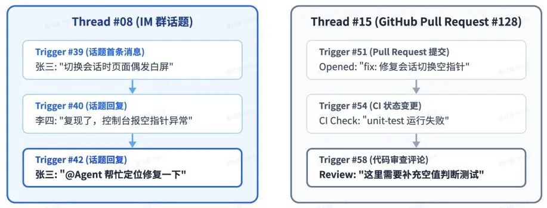

Router 按某条 Thread 的第一条消息建好 Worker 以后，这个 Worker 直接订阅该 Thread，派送就分成两路。已经订阅的走 Fast Path：这条 Thread 之后的消息由程序直通给它，不用 Router 再调工具转；新消息若超出这件事的范围，Worker 可以退订，或者还给 Router 重新派。没人订阅的走 Slow Path：Router 还是能看见所有消息、掌握全局，但只对还没人订阅的新消息做判断和分派。


订阅是多对多：一个 Worker 可订阅多个相关 Thread，一个 Thread 也可被多个 Worker 订阅。几个 Worker 在同一环境或讨论里交叉时，新事件会同时直通给它们，不用点对点通信也能知道彼此在做什么、自行化解冲突；输出侧仍由 Worker 向 Router 汇报关键结论，Router 统一回复用户、同步全局记忆。
3.3 上下文组织：事件经过过滤与路由、到了目标 Session 之后，要决定往窗口里塞多少：塞多了会挤占窗口，还会稀释模型注意力；塞少了模型又得反复调工具去读。作者一句话：浪费上下文窗口就是浪费模型的智能。做法是把窗口当 Cache 管：Inline 把马上可能用到的信息直接放进窗口，省一次工具往返；Spill 把超预算或低频的完整信息留在窗口外，只留引用或摘要按需读取。
按「局部性」一步步加料：从最少信息开始，起初只给当前对象的 ID 和一句摘要；再利用局部性逐步把近期很可能用到的东西放进来，先放强相关对象的 ID，再放时间或位置上挨着的内容，比如正文开头 50 个字、IM 里这条消息的上下几条和它回复的那条、评审讨论里相邻的评论；装不下就外放，给长内容定一个不大的长度上限，超出上限则截断，并留个「接着读」的入口，模型真要全文时再调工具取。
跑久了以后问题来了：后续消息大多直通 Worker，历史任务越积越多，Router 不可能把它们的全部经过都塞进自己的窗口，可用户换个渠道提起一件旧事时，它又得想得起来。把 Inline & Spill 的做法同样套到系统里每类对象上，就有了一种按需一层层展开的检索，叫链式召回（Chain of Recall）：Trigger、Thread、Worker Session 各有唯一 ID，注入时顺带写上紧密相关对象的 ID，对象之间连成一张引用图；顺着图走，比如从眼前这条消息找到它所在的 Thread，再到负责的 Worker Session，再到这个 Worker 牵涉的另一条代码评审 Thread。

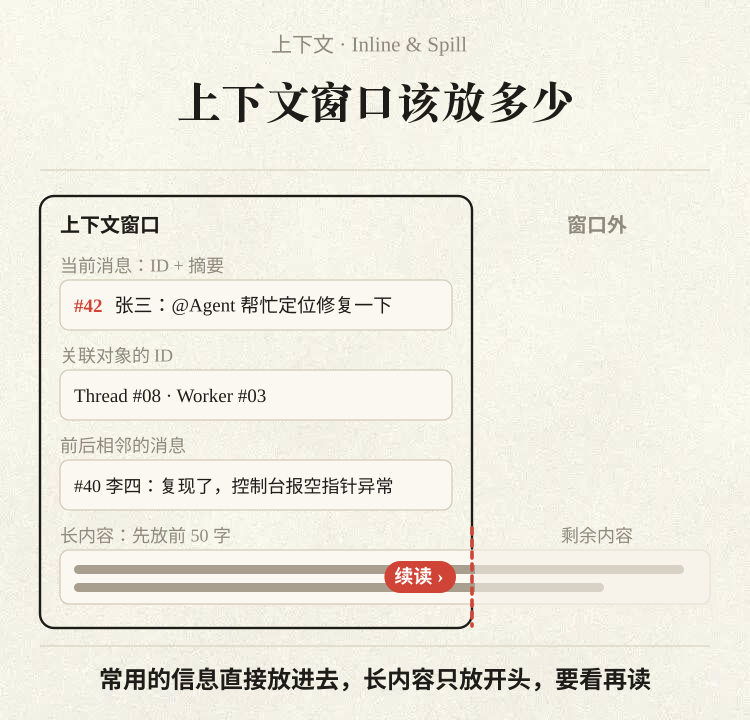
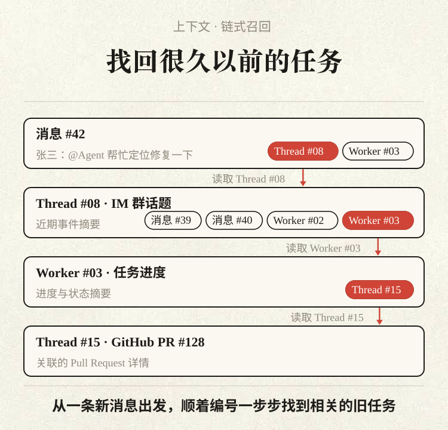
3.4 提前行动：借投机执行（Speculative Execution），在还不确定结果会不会用上时，就根据环境信号在后台先试，用额外算力换人少等、少介入；有价值就交付，没价值就丢弃。个人助手的例子：收到会议邀约，先核对日程冲突、搜背景资料、备好回复草稿，用户过目即可发出。研发的例子：他们在公司内部 DeepSeek Harness 用户群配了一条「静默复现并修复」策略，有人反馈问题时 Agent 后台先复现、找修复，只有确认问题并找到简单修法才交付，否则全程安静。


耗时工具改成 start()/stop()；IM 短、GitHub 和邮件写全
第 2 节解决了上下文层面的连续，交互体验上还有两件事：异步 ReAct Loop 让后台耗时操作不阻塞前台（4.1），以及让输出匹配不同信道的带宽和习惯（4.2）。
4.1 全双工：经典 ReAct 循环里，模型发起一个同步的 run() 调用，就得干等工具跑完，这段时间新消息一概不理。他们把耗时的命令和子任务改成异步的一对 start() / stop()：start() 一调马上回一句Started（已启动），循环接着走；后台跑完，结果作为一条新事件塞回会话；模型也能按情况调 stop() 掐掉跑太久的命令。前台聊天和后台干活就此分开，新来的话在这一步推理结束后就会被处理。
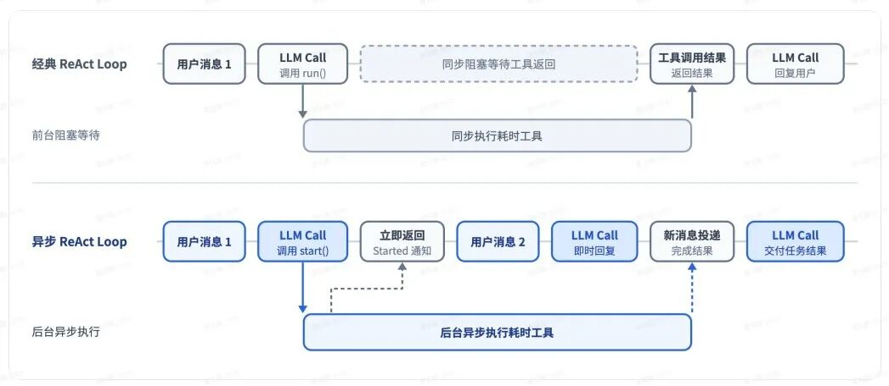
原文明说：这套异步任务机制已经在 DeepSeek Harness 里实现，但尚未默认开启。
4.2 多信道：把面向单人终端的输出搬进群聊，冗长推理和密集工具调用会让多人协作信息过载。双层架构已经把这些隔在 Worker 内部，由 Router 统一对外；在此之上，再用提示词给不同信道定交互规范。
即时通讯（IM）：少打扰，像同事那样只有要拍板或要验收时才出声，问题直接问、结论短短给；他们试下来管用的一条硬规矩是每次回复不超过 100 词。邮件、GitHub、文档这类异步渠道：反过来要写得结构清楚、信息足，比如开 PR 时照项目规范把背景、改了什么、怎么验证都写上；个人助手则直接拟好成形的邮件和文档摘要。
Loop 上云、状态进库、环境留在原地；另起一个会话盯进展
今天的本地 Agent，把三样东西都放在同一台电脑上：驱动 Agent Loop 的算力、要长期留存的会话状态、仓库和本地工具链这样的执行环境。电脑一睡眠或断网，Agent 就停了，也碰不到别的机器上的环境。想让它实现云端持久在线、能接各种真实环境，作者借了计算机系统里「存算分离」（Compute-Storage Separation）的老思路，分两步把这三样拆开（5.1、5.2 节）。
5.1 计算与状态分离：Loop 计算可以无状态，放进云端弹性容器，能水平扩展、重启或替换；Session 等持久状态存数据库，连续性靠存储保证。这样摆脱单机生命周期，云端持久在线。
5.2 计算与执行环境分离：模型干活所需的上下文，很多要从代码库、本机文件、依赖的服务里调工具去拿，所以执行环境本身也算上下文的一部分。常见两条路都不理想：在云端启动沙箱、拉代码，再设法重建和同步环境，可真实环境里有未提交的本地修改，有私有凭据、只在内网能访问的服务、特定的硬件和工具链，复刻起来贵还容易漏；要用户干脆放弃本地、整个迁往云端工作，对很多人来说代价太大。
他们的办法：Loop 跑在云上，带状态的执行环境不搬家，端侧只放一个不记会话的小 daemon，收到命令就执行、把结果交回。作者把它对应到 Anthropic 讲的「脑手分离」思路；不同在于那篇面向托管沙箱和客户 VPC，这里首先要连的是可能间歇在线的个人电脑，上面有没提交改动和本地密钥。下图展示了计算、状态和环境三者分开后的样子。所以两种都支持：自带机器（BYOM）和云上托管的机器；某台电脑重新上线时，云端还会把该在那台机器上做的活补上。



第 6 节 Watchdog：光有第 5 节的存算分离还不够，想持久在线，系统还得能从异常里自行恢复；长期在线的系统光靠内部逻辑很难可靠，得在主系统之外另设一个独立的控制回路（作者叫它 Control Loop）。而且 Agent 的很多异常不是进程崩溃，而是模型陷入无效循环或偏离目标，所以除了基础设施存活，还要监控任务本身的进展。
具体做法是在主系统外面另开一个 Watchdog 会话，靠定时消息唤醒它。它既管基础设施类的毛病（接口出错、状态恢复不了），也让模型去看每个 Worker 是真在推进还是原地打转、方向是否偏离整体目标；遇到外部的偶发故障就隔一阵再查，直到恢复。它本身也是有全套工具的 Agent，维护的人可以直接问它为什么出错，或者让它当场改主系统的行为，例如增删一些提示词、改一下触发规则。
合成负载、占位编码工具；双层更快更稳，代价是读缓存 token；直通主要给 Router 减负
初步实验分两层：先端到端比较双层架构、订阅直通和单 Session 三种做法（7.1 节），再单独给 Router 的批处理做压测（7.2 节）。作者先打预防针：负载是合成的、环境做了简化，有些设置本可以更严谨，结果仅作初步参考。
7.1 消融：拿群聊消息和 GitHub CI 消息两路一起去喂四种方案。每轮大约 300 条消息，真正要干活的约 20 条，其余是闲聊，也有跟进、叫停和 CI 消息。写代码这一步换成了一个只会「耗时间」的假工具，所以比的是调度和协作，而不是写代码的本事。每种方案跑 5 次。参赛的四种：完整 Super-agent；拿掉直通的 Super-agent；单会话加 Subagent 工具、提示词中性（英文原提示，大意是合适时就用 subagent）；单会话加 Subagent 工具、提示词鼓励多委派（英文原提示，大意是每条消息都会打断你，尽量把活交给 subagent）。


完工时间：完整 Super-agent 的 p50 为 12.4 分钟、p95 为 15.7 分钟，比单会话加 Subagent 工具好得多。单会话的毛病是太看提示词，主会话常常自己动手，导致总完成时间拉长、性能不稳定：提示词中性时，模型 5 次运行里一次 Subagent 都没调，所有活都在主会话里干、一来消息就被打断，p95 拖到 29.5 分钟；改成鼓励委派后，5 次里有 4 次分了出去，快了一些但还是比不上 Super-agent，剩下那 1 次它认定活「很小」自己干了，拖出一条长尾。双层架构让 Router 不亲自干活、Worker 只收自己订阅的 Thread，等于在系统层面把「分不分工」从模型临场决定里拿了出来。
成本方面：Super-agent 同时开着好几个会话，每次实验读缓存用的 token 比单会话多，相当于花更多 token 买来更短、更稳的完工时间。拿掉直通之后，完工时间和完整版差不多，但一次实验里 Router 要拍板的次数多了约 30%，读缓存 token 合计从 2323 万涨到 3177 万，约多 37%。结论：在这组负载下，直通不让活干得更好更快，它省的是 Router 那边的 token 和推理。
7.2 Router 批处理压测：为了验证 2.1 节那个单 Router 会话的上限，只测 Router——它用真模型，Worker 换成假模型，把需要拍板的 Trigger 从每分钟约 1 条一路加到约 40 条，观察平均每批几条、一次请求多久、摊到每个决定多少推理时间。平均每批从 1.0 条涨到 2.8 条，一次请求只从 2.5 秒变成 3.9 秒，平均到每个决定上的推理时间则从 6.4 秒降到 1.6 秒。也就是说消息扎堆时 Router 能靠合并提高实际吞吐；这也说明为什么 7.1 里拿掉直通、Router 压力变大，也还没碰到单 Router 的上限，在他们现在的团队规模下没必要急着切分。
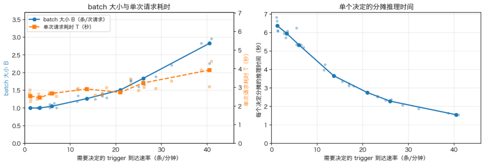

怎么扩展、脱离 Session 后怎么协作、组织边界与 A2A、安全隐私
第 2 至第 6 节的五个模块撑起了基本架构，第 7 节验证了核心调度。作者承认它之所以复杂度低，很大程度靠当前阶段的工程和场景简化；超出范围后有四类问题没解决：双层架构往大了怎么扩展（8.1 节）；Session 藏起来后，人怎样和 Agent 协作（8.2 节）；上下文边界划在哪、A2A 怎么做（8.3 节）；安全与隐私（8.4 节）。
8.1 扩展：单个常驻 Router、加订阅直通、加 Worker 之间不直接通信，这个简化组合，花不多的工程量就覆盖了他们眼下大多数日常任务。可规模变大、任务之间牵扯变多，一个 Router 撑不住的时候，层内结构该怎么搭还没有答案：Router 什么时候要切、粒度如何划分，同层 Worker 采用何种协作拓扑，Worker 何时需要直接通信。另外，常驻 Router 加引用图召回主要解决的是近期任务的回查；时间一拉到跨月甚至更久，长程记忆就成了扩展的主要瓶颈。作者还提到，还可以拿批量分派、上下文召回这类任务对模型做专项训练。
8.2 脱离 Session 后怎么协作：底层会话不再对应界面上的会话后，怎么呈现任务、做项目管理是新问题。作者认为以聊天窗口为中心有路径依赖，交互可以更多发生在领域特化的界面里，比如就在 GitHub 的 Issue、Pull Request 里干活；界面上也可以保留会话，但一个会话背后未必只是一个 Session。过渡期很多任务仍需要人中途参与，怎么让人随时介入、接管或实时协同，也值得探索。最终形态可能高度定制化，作者说 DeepSeek Harness 的开放架构更容易支持这一点。
8.3 上下文边界与 A2A：前面都假设一个实例里的信息汇成一份全局上下文。到了更大的组织，「怎么给大家配 Super-agent」实际上就是在决定哪些人共享上下文、哪些人隔开：要共享的合用一个实例，要隔开的各配一个。实例多了之后，比如每个人自己的助手和整个团队合用的那个之间，跨边界的配合就成了 Agent 与 Agent 之间的通信（A2A，并不指某个具体协议）；底层上下文互不共享、各自又代表不同权限时，如何实现安全、可靠的 A2A 协作，作者说还要再探索。
8.4 安全与隐私：第 3 节让外界事件也能驱动 Agent，可它收到靠不住的输入的机会也随之变多；这一关过不了，Super-agent 就只能待在一个很小、彼此信得过的圈子里。第 5 节的「云上循环、端侧小 daemon」本来就默认云和设备互相信任；云端一直吃进外面的事件，设备上又放着私有代码、敏感数据和本机密钥，这条跨设备的连线就是明显的隐患。就算云端没被攻破，只要设备上的密钥会被读进模型上下文，正常干活时也可能泄露，所以还得设计一种办法，让 Agent 用得了密钥却始终看不到密钥本身——原文把它列为待解决，没给方案。

内部实例在持续运行；公开的是研究原型，和文中实现不完全一样
作者说他们没发明新理论，只是把计算机系统里的老办法搬到 Agent 上。按他们的说法，内部的 Super-agent 已经一直在跑，日常参与复现和修 bug、回应代码审查，也参与 DeepSeek Harness 本身的迭代。
收尾回到开头：单任务越来越少需要人干预，瓶颈转向人的注意力；靠双层架构、事件驱动、异步多信道的交互、存算分离、外部 Watchdog，人从执行细节上移到决策和验收。Agent 不再是被动等指令的对话窗口，而是持续在线的协作者，对个人是跨设备的助手，对团队是融入研发流程的成员。
文末声明：文中一部分设计做进了 dsh-superagent-prototype，但这个插件只是用来验证路线的原型，不是 DeepSeek 的正式产品。致谢里说，文章来自 DeepSeek Harness 团队的日常实践，系统实现和写作由 Yujia Qiao 完成，另有十几位同事参与审阅讨论。
补充：仓库核对（GitHub API 与 README）：deepseek-ai/dsh-superagent-prototype 在 deepseek-ai 组织名下，MIT 许可，主要语言 TypeScript，10 月 31 日建库。README 开头就写它只是供参考的研究原型、不是 DeepSeek 正式产品，并说明它与内部版本、与文章描述的实现都有出入，文中部分设计属于未来方向，原型没做。
补充：在仓库文档里能找到的对应物：Trigger、Thread、Subscription（Thread 和 Ticket 多对多，同一 Thread 的新消息直接推给订阅它的 Ticket）、Eval，以及分开的 Router、Worker 两套模型预设；还有一个 observe 模式，主动揽活时只记下「would accept」（本来会接）而不真的接。文档里搜不到 Watchdog、端侧 daemon、Spill 这些词，与 README 的说法吻合。
补充：读这篇时的分寸：文中的「已实现」只有两处明说——内部实例在跑、异步任务机制已实现但未默认开启；其余是架构思路，不能当成 DeepSeek Harness 现有功能。
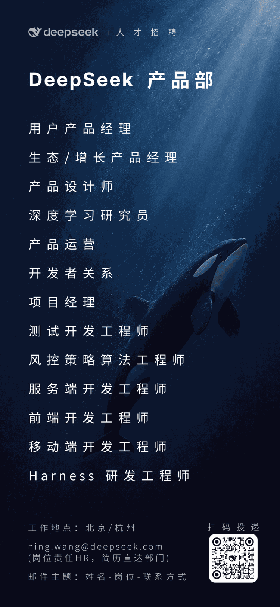
逐段对得上原文，数字准确；但没提「研究原型、和文中实现不同」的声明
meng shao（@shao__meng）在 10 月 31 日 14:41 UTC 发了一条中文长帖，开头一段把全文压成几句：单个 Agent 已经很能干，卡住的是人一次能看住几个会话；Super-agent 要跨渠道接得上、多件事并行、按事件主动干、在云上一直在；手段是五件经典系统设计——双层 Router/Worker、事件过滤与直通、异步 ReAct、存算分离加端侧 daemon、外部 Watchdog——把会话藏进系统内部，人只管大方向和验收。
帖子后面的小标题依次是「问题从哪来」「四个基础特征」「双层架构」「事件驱动」「面向人的交互」「计算、状态与环境分离」「Watchdog」「实验」「未解问题（第 8 节）」，和公众号第 1–8 节一一对应。我逐段对照过：概念没有走样，3–5 个会话、12.4 / 15.7 分钟、29.5 分钟、+30% / +37%、6.4s→1.6s 等数字都和原文一致，「异步已实现但未默认开启」也照实写了；投机执行的例子（会议邀约可先对日程、备资料）同样来自原文。
文末给了两个链接：GitHub 仓库（写明主笔 Yujia Qiao）和公众号原文。
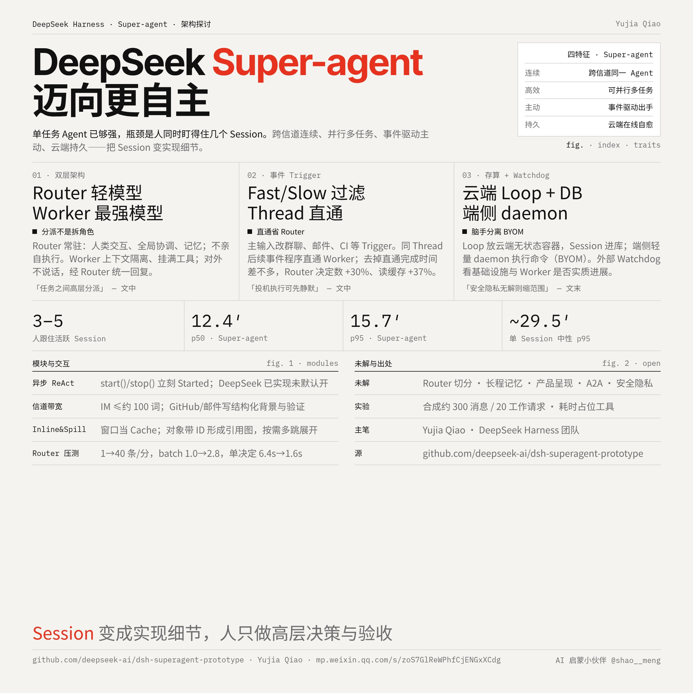
补充：摘要漏掉的一点：没有提文末和仓库 README 的声明——dsh-superagent-prototype 是研究原型、不是 DeepSeek 正式产品，并且和文中描述的实现不完全相同、部分设计未实现。只读摘要容易把整套架构当成已上线能力。
注意力上限是共鸣点；有人质疑署名，有人指出端侧 daemon 的入侵面和「直通不是提速」
@pandaxia0613 对署名打问号：他顺着出处点进去，发现英文 Article 是 @DeepTibowow 发的，这个号当天刚注册、没粉丝也没认证，而 DeepSeek 官方号那周没提过 Harness，所以他对「出自 DeepSeek 团队」先打个问号。（原评论）本页的核对见最后一节：公众号和 deepseek-ai 组织下的仓库都对得上，但那个 X 账号是不是官方的，仍未确认。
@LuckyChenxi 说最容易被读偏的地方是「直通」：照实验看，拿掉它完工时间没怎么变，涨的是 Router 要拍板的次数和缓存读取，可见它是在给 Router 卸担子，而不是让活更快完成。他自己的推断：个人搭多 agent，与其多开 worker，不如先让同一件事后来的消息直接交到负责它的那位手上。（原评论）
@0xwolverines：他觉得压测结果最出乎意料——来的消息从每分钟 1 条加到 40 条，摊到每个决定上的推理耗时却从 6.4 秒缩到 1.6 秒。他更担心第 8 节留下的那个坑：端侧 daemon 既能跑命令、身边又有本机密钥，被攻击的面比单机 Agent 大不少。（原评论）
@huahuadaren2023：一旦群消息也能触发任务，最好按 Thread 收紧端侧 daemon 的权限；否则过滤规则哪天漏过一条，你的电脑就替一个陌生人执行了命令。（原评论）@asuan_ai 一句话附和：关键是端侧执行的安全与权限隔离。（原评论）
注：上一条已经收了 @asuan_ai 那句话，这里不重复。
@DaiLin67911：觉得 3 到 5 个这个数很真实；他最欣赏 Router 可以不给 Bash——调度的那层自己动不了手，就算群里混进一条注入指令，最坏也就是派错活，删不掉数据库。（原评论）
@lvgreenzhangyug（英文）：他在 Android 上同时跑构建和审查也撞到同一堵墙，瓶颈是注意力不是工具；他追问不给 Bash 的 Router 是真的更安全，还是只把风险挪了个地方。（原评论）
@LeeBuildsAI：他也撞过「盯会话」的天花板，办法不是多盯，而是让它们少来烦你——只把花钱、删东西、动线上服务器这三类留给人点头，别的先做完再汇报，人从监工变成看日报的。（原评论）
@evvvvince：几个会话并行，最怕两个 agent 动同一个文件，调度那层得先清楚谁在改哪块。（原评论）@PlatoFighter：worker 越多，他越离不开 agents.md，项目背景不写明白，派出去的活大多会跑偏。（原评论）
@Neo19990331 猜下一个难题：Router 跑顺以后，每天 Worker 交上来的一堆汇报要怎么排先后，哪些该立刻打断人，哪些攒着批量看。（原评论）@LeoLeochen975 说自己开两三个 AI 窗口就乱，觉得要是能先拆好任务、最后统一汇报，对不写代码的人也友好；他问跑偏时人怎么及时插手。（原评论）这两个问题正好是原文 8.2 节自己列的未解项。
@wCs123123 的小结：真瓶颈在于人一次最多盯 3–5 个会话；Router 收拢群聊、GitHub、邮件里的消息，Worker 各开会话并行干，原型以 MIT 协议开源，多任务的 p95 从 29.5 分钟降到 15.7 分钟；他认为落地要看两件事：几个 Worker 同改一个仓库时冲突怎么合并，Router 判断错了人能不能迅速接手。（原评论）注意：29.5 是「单会话、中性提示」那组的 p95，不是同一套系统改进前后的对比。
其余几条是体感：@sisiliu517 建议先定人最多并行盯几个，超限就排队（原评论）；@HunziDaily 说管三个并发就头疼，最后都卡在人工复核（原评论）；@halfcoderlab 说前几天并行两个 agent，其中一个跑了 36 秒就因权限问题停住，问 Super-agent 管不管得了（原评论）。
@grok 应一位读者请求给了白话版：DeepSeek 想做的「超级助手」主动干活、同时干多活、一直在线；上层「路由器」用轻模型管协调，下层「工人」用强模型干活；消息、邮件和代码评论会自动触发它；大脑在云端、手在你电脑上，还有监督员盯进度；人只定大方向，验收结果就够。（原回复）
补充：覆盖情况：评论区两页共 26 条（含 @grok 1 条），本节收 17 条；没收的是「套娃式进化」「我的极限四个」这类一句话附和，以及 @DeepTibowow 的转发求评。
对我们的借鉴（借鉴分析：指挥家）
本节只收录指挥家已给出的五条工作台借鉴，不另加分析；每条后面注明原文位置，我逐条回原文核对过，五条都对得上。第 ⑤ 条后半句是指挥家的推断，标为「补充」。
【技术】① 不能写成 DSH 现有能力。原文文首声明这是架构思路探讨、不介绍 DeepSeek Harness 现有产品功能（文首引言）；文末说部分设计做进了原型，原型不是正式产品（第 9 节结语后的声明）；仓库 README 第一句就是「Research prototype for reference only」，并说与内部版本不同、部分设计没做（README）。核对：一致。
【技术】② 实验测的是调度，不是写代码。7.1 节把编码换成只耗时间的占位工具，原文明说测的是系统的调度与协作，不是单任务执行能力（第 7.1 节第 1 段）。引用这组数字时要带上这个前提。核对：一致。
【技术】③ 核心思路：人只盯得住 3–5 个会话，所以前台派活、后台隔离执行，人只做决策和验收。出处：第 1 节第 3 段（3 到 5 个活跃 Session）；第 2 节双层结构与 2.1 节 Router 不直接执行具体任务、只管交互与分派的设定；第 1 节第 1 段与第 9 节结语（人上移到决策与验收）。核对：一致。
补充：①④ 所引仓库文件：README.md、docs/000-philosophy.md、docs/002-authorization.md、prompts/admission.md（行号按 10 月 31 日抓取的版本）。
【产品】④ 四条产品原则，出自原型仓库而不是公众号正文。每条消息、每个面板元素都要证明自己值得占用注意力，否则删掉（docs/000-philosophy.md 第 7 行）；面板只列等人处理的事，健康状态不占位置（同文件第 21 行）；只有允许名单里的人发的请求才算数（同文件第 11、28 行）；主动揽活一开始只记录、不执行，默认 observe 模式（docs/002-authorization.md 第 98 行；prompts/admission.md 第 68 行）。核对：一致；公众号 3.1 节的「白名单」程序层准入与此呼应。
【产品】⑤ 上下文边界与凭据。8.3 节说组织怎么配 Super-agent，实际是在划分上下文边界（第 8.3 节第 1 段），可以对应到企业里资产与知识库的权限划分；8.4 节说还需要设计机制，让 Agent 用得上凭据、却碰不到凭据本身，原文没给方案、属于未解问题（第 8.4 节第 3 段）。核对：两处原文表述一致。补充：把这点当作工作台的差异化方向，是指挥家的推断，原文没有这么说。
同一篇的动图复述：30 张动图已插进上面各节；它漏了原文的免责声明
2026-10-31 公众号「赛博禅心」发了这篇的动图复述版（页面作者字段「金色传说大聪明」），开头自述是跟着 DeepSeek Harness 那篇发的，目的是把那篇讲的做法画出来；观点和数字全部来自原文，新东西主要是 30 张 SVG 动图，本页已把它们插进对应章节，标「动图版图 N」。
| 方案 | 完成时间 P50 / P95（分钟） | 单次实验读缓存 token（全部 Session） |
|---|---|---|
| Super-agent | 12.4 / 15.7 | 2323 万 |
| Super-agent，去掉直通 | 12.6 / 15.5 | 3177 万 |
| 单 Session + Subagent，中性提示 | 20.4 / 29.5 | 605 万 |
| 单 Session + Subagent，提示优先委派 | 13.8 / 29.0 | 1082 万 |
动图版文末同样提到 dsh-superagent-prototype 插件是验证技术路线的原型，PS 也写了 Yujia Qiao 负责系统实现和写作、团队十多位同事审阅；这里的 Yujia Qiao 是原文作者，不是动图版作者。
补充：动图版漏了原文的免责声明：原文开头说明，全文讨论的是工程上的架构思路，不是在介绍 DeepSeek Harness 已有的产品功能；文末又说，那个原型并非 DeepSeek 正式推出的产品；动图版开头只剩「架构思路探讨」这半句，文末那句「不是正式产品」也没有。读动图时要把这两句补上。
补充：未确认：动图里的群聊对话、字体设置需求、删除线 bug、人名和编号，是为图解编的示意还是取自 DeepSeek 内部真实记录，动图版没有说明，本页无法核实。
公众号与官方组织仓库可对上；英文 Article 的 X 账号身份未确认
补充：公众号署名「DeepSeek Harness 团队」，网页里的作者字段写的是「DeepSeek 产品部」，发布时间 10 月 31 日 12:29 UTC。文首、文末各有一句声明：一是本文讲架构思路、不介绍现有功能，二是原型不是正式产品。
补充：英文版 Article 由 @DeepTibowow 发出，正文开头署名 @deepseek_ai 与 @DeepSeekHarness，内容和公众号对得上。这个账号 10 月 30 日才注册，简介写的是 Friendly “DeepSeeker” for DeepSeek Harness，只有 1 个粉丝，没有认证。
补充：判断：仓库在 deepseek-ai 组织下，README 直接引用了这篇文章的英文标题，所以文章出自 DeepSeek Harness 团队这一点可信；@DeepTibowow 这个 X 账号是否官方，未确认。
链接：公众号原文、X 摘要帖、英文 Article 帖、仓库。